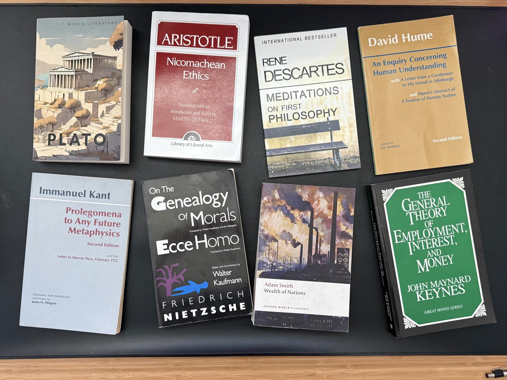

Two weeks ago, the YouTube algorithmic gods suggested to me The Gist Of Western Philosophy. It’s a great 15-minute video with the ambition of summarizing all of Western philosophy. But what’s more impressive is what the creator claims preceded the video: over the course of one year they read the works of 52 major philosophers.
Coming out of the video, I too wanted to become more acquainted with philosophy. I read a little bit of Kant and Bentham (and I think some Foucault?) in my undergraduate Tech Ethics class, but to say I was familiar with their works would be a lie. I read Machiavelli’s The Prince about 10 years ago, and my big takeaway is that no one uses the adjective “Machiavellian” appropriately. And a couple of Aristotle’s greatest hits have been sitting in my Goodreads to-read queue for over a decade.
I don’t want to read 52 philosophy texts. But I kindof want to read five philosophy texts. This quote from the beginning of the video really stuck out to me:
Most importantly: in chronological order. That was actually pretty important because I realized that philosophy is a conversation. Wittgenstein is reacting to Kant, who is reacting to Hume, who is reacting to Descartes, who is reacting to Plato, and so on.
The creator helpfully listed all 52 philosophers they read in the video’s description. But how to reduce that down to just one-tenth of the repertoire? Well, a neat thing about popular philosophy is a lot of it is in the public domain, and basically all of it has been analyzed and discussed intensively. Sounds like a great subject to bring to the generative pre-trained stochastic parrot!
So I asked ChatGPT 5:
Let’s say I want to spend a few months really digging into philosophy. I want to read a seminal work or educational material from 5 philosophers over the course of history and I want to do it in chronological order so I can see how they are responding to previous thought. I want to get a strong sense of the major foundations of philosophy. I don’t want to dwell very much on theological philosophy but I don’t want to completely ignore its role in the evolution of thought. Given all this, and what you know about my interests, can you pick 5 philosophers from this list [from the video] that I should read. Explain your selections. Think of this as my self-guided education in philosophy.
It only took a little back-and-forth to land on my list. For largely arbitrary reasons, I rejected the initial recommendation that included Augustine and swapped in Descartes. This left me with a compact reading plan, with the goal of a crash course on how Western philosophy keeps answering itself:
- Plato: Republic (Books II–VII)
- Aristotle: Nicomachean Ethics (I–III, V-VII, X)
- René Descartes: Meditations on First Philosophy (I–VI)
- David Hume: Enquiry Concerning Human Understanding (entire)
- Immanuel Kant: Prolegomena to Any Future Metaphysics (entire)
Now let me tell you: if you roll into a Half Price Books with $40 and an appetite for pre-owned philosophy, you can shop like a king. I also picked up some Nietzsche, Smith, and Keynes. Feel free to yell at me in the comments about whether economics counts as philosophy.

By now, I’m sure some readers are mad at me. Maybe you work in liberal arts academia. Maybe you think my tight-five philosophy reading is deeply flawed and this is further proof that LLMs are bad. That’s okay! I’m not trying to replace academia. I’m just trying to read some philosophy without decision paralysis.
I didn’t duplicate it here, but in addition to enumerating works to read, I went back and forth with ChatGPT to get a bit of a mini syllabus for insights and themes and speed bumps I might face while reading. It was a great way to jump in! So I jumped in.
I took The Republic one book at a time. My workflow was to read a book, jot notes in Bear, and then once I finished paste my messy notes back into ChatGPT for further exploration.
Sometimes my notes were basic, like as I figured out that Plato was ventriloquizing Socrates:
Hey quick aside: should I be reading these ideas as belonging to Socrates or to Plato?
Sometimes my notes teed up my interpretation and projections:
Man, the noble lie really does make me think about how conservatives romanticize the founding fathers and can’t handle the critique of slavery
Sometimes my notes were actual critiques:
It’s pretty funny that this book ends with a grand distinction between knowledge of how things “are” vs just having opinions, when all of the dialogue thus far across multiple books have leaned entirely on enumerating endless things that Plato asserts are “good” or “obvious” or “desired”
It would have been fun to do this sort of discussion as a reading group that might actually argue with me about these notes. ChatGPT occasionally pushed back, softly suggesting I missed the point, but it generally told me my observations were sharp and in line. Philosophy is one of those subjects where you need to be challenged more than be told that you’re right. I’ve probably devastated more liberal arts professors at this point. That said, I am still the reader, I’m the one thinking about the works for hours, and it’s my own notes being dumped into the text box.
So what are my thoughts on Plato? Well, a nice benefit of language models is they’re pretty good at modeling language. They can take twelve days of unstructured commentary and summarize it all for you quite nicely:
I would like you to look back at our conversation about Plato’s Republic, look at my observations and our discussions of them, and highlight my most salient critiques and insights.
- Epistemic overreach: Plato asserts a single, static “Form of the Good,” downgrades everything else to mere opinion, and demands first-principle certainty while rarely supplying it. It’s a bit of bait-and-switch: opinions masquerading as knowledge, crowned by Book VI’s line without a method for identifying real “knowers.”
- Static ideal vs. evolving justice: I think history shows us to prefer dynamic, (maybe fallibilist?) frameworks over Plato’s timeless blueprint.
- Authoritarian pedagogy: Book III’s cultural program: censorship, fixed musical modes, and anti-dissonance, reads like “the medium is the message” turned into policy. Moral psychology by force: control styles to control souls.
- Representation shapes character: Even though I reject the strong censorship, the media-morals link is prescient (Postman vibes): forms and styles train dispositions.
- Justice redefined as hierarchy: In Book IV, justice = each part doing its own work (city: rulers/auxiliaries/producers; soul: reason/spirit/appetite). It’s a rigid caste system rebranded as “harmony,” hostile to mobility and innovation.
- Noble Lie as civic glue: The metals myth links to modern origin myths (e.g., romanticized Founding Fathers): a stabilizing story that resists critique.
- Elitism about the demos: Book VI’s ship metaphor doubles as anti-democracy and anti-relativism. Politicians serving constituents chase popularity; truth requires expertise. The case is underargued but an anti-relativist thrust is clear.
- Anti-relativism and anti-novice: The ship image isn’t without merit: some domains are truth-apt and expertise-laden; popularity doesn’t make them so. The question is whether “justice” belongs there.
- Dialogue as ventriloquism: The “dialogue” is a stacked-deck monologue. Plato borrows Socrates’ authority to sell his own system; interlocutors mostly assent on cue.
- Eugenic, anti-private life for guardians: Book V’s communal breeding, child exposure, abolition of family/private property, authoritarian eugenics are all very disturbing! Plato pairs it all with a surprising argument for women’s political equality.
- Math as royal road, science half-seen: Plato exalts mathematics, dismissing sensory astronomy, and half-anticipates physics (movement in 3-D) while calling current work “absurd.” Admiration for math; impatience with empirical practice.
- Philosopher resentment and duty: Book VII’s Cave: knowers must “return.” Both civic duty and a chip on the shoulder that society should revere philosophers more than it does.
- The big detour problem: Across the middle books, Plato wanders from “is justice better?” into city-design and epistemology. It’s engaging but unconvinced: impressive scaffolding, shaky footings.
- Models vs. methods: Plato gifts durable models (Sun, Line, Cave, Gyges, Noble Lie), not rigorous methods.
- Education as moral engineering: Education isn’t ornament; it’s the state’s engine. Book VII’s decades-long curriculum is the hinge between epistemology and politics.
This post is not a book report, but rather a report on how I’m using AI tools to learn new domains in new ways. The tension here is that philosophy resists tidy summaries, and language models are built to produce smooth, confident digests. Without bringing your own full thought forward, they can sand off the strangeness and ambiguity that makes these texts worth reading in the first place. What I’ve found useful is not treating the output as my own interpretation, but as scaffolding: a way to surface themes, keep momentum, and occasionally highlight blind spots in my notes. The thinking still happens on my side of the screen; the model just lowers the friction of staying engaged. I’m going to keep with this process as I work through my philosophy stack.
On to Aristotle.